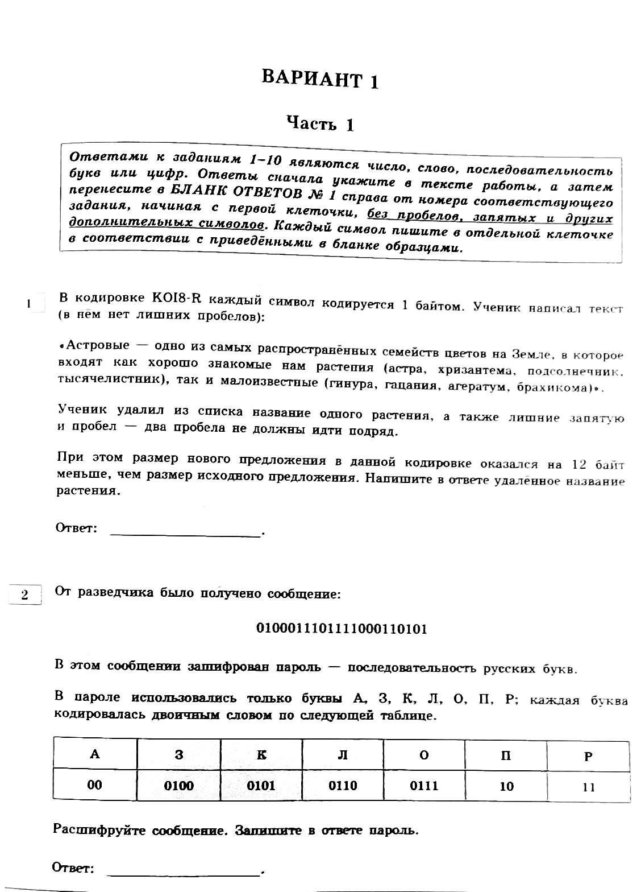
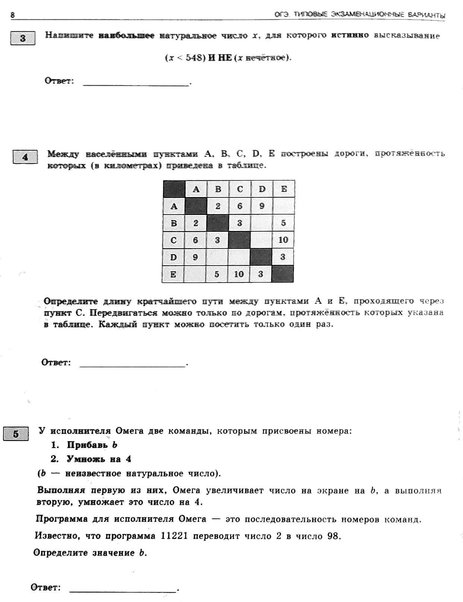
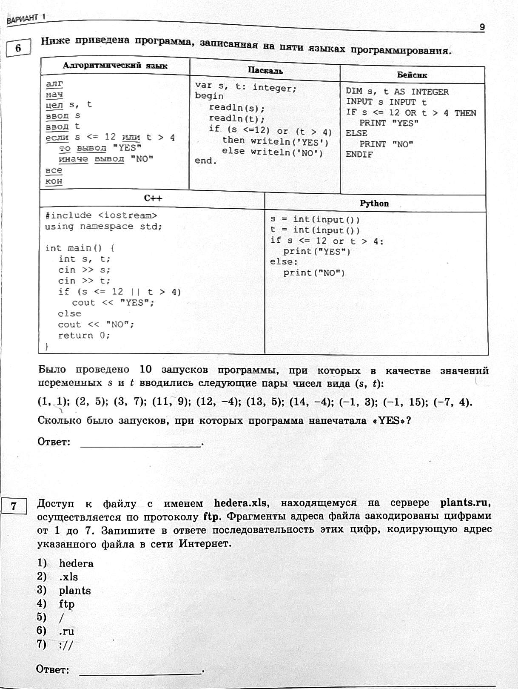
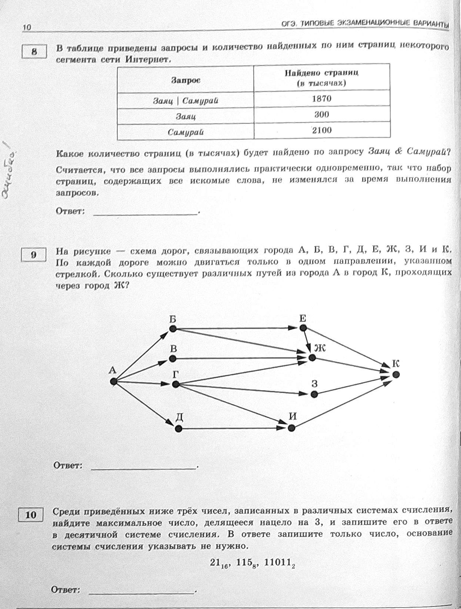

Задание для сдающих: 1 вар. из Крылова (на листиках). Внизу страницы задание для несдающих.
   --------------Для несдающих ОГЕ------------------
---сохранять код в папку со своей фамилией и вариантом на рабочий стол---
--------------I вариант------------------
- На вход подается натуральное число (целое, строго большее нуля). Выведите YES, если в числе от одной до двух цифр 4 и NO - в противном случае.
- Создайте 2 переменные: целую a и два указателя x, y на целую a. Введите с клавиатуры целую. Вычислите адрес (номер) целой и поместите в оба указателя. Уменьшите на 3 значение переменной по адресу первого указателя. Выведите для каждого указателя его адрес и значение по этому адресу.
- Создайте 3 целые переменные и введите, а также по указателю на каждую (каждый из которых должен указывать на свою переменную). Поместите в адрес первого указателя адрес второго и выведите после этого значения всех указателей.
--------------II вариант------------------
- На вход подается натуральное число (целое, строго большее нуля). Выведите YES, если в числе не было ни одной цифры 3 и NO - в противном случае.
- Создайте вектор из 5-10 целых чисел и указатель на 3-й элемент вектора (&a[3]). Уменьшить адрес в указателе на 2. Вывести значение указателя.
- Создайте 2 целые переменные и введите, а также по указателю на каждую (каждый из которых должен указывать на свою переменную). Обменяйте значения указателей и выведите после этого значения указателей.
--------------III вариант------------------
- На вход подается натуральное число (целое, строго большее нуля). Выведите YES, если число полностью состояло из цифр 2 и NO - в противном случае.
- Создайте 2 переменные: целую a и два указателя x, y на целую a. Введите с клавиатуры целую. Вычислите адрес (номер) целой и поместите в оба указателя. Увеличьте на 3 значение переменной по адресу первого указателя. Выведите для каждого указателя его адрес и значение по этому адресу.
- Создайте 2 целые переменные и введите, а также по указателю на каждую. Выведите минимум из 2-х значений указателей, указывающих на эти переменные.